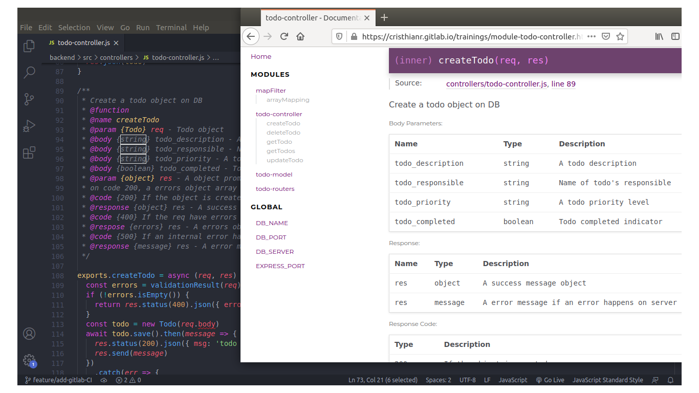
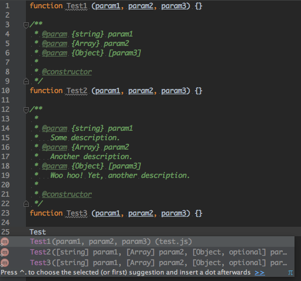
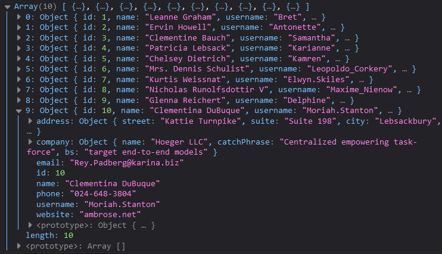

Aunque JSDoc genera documentación automáticamente, puede ser limitado en cuanto a la personalización del estilo y la estructura de la documentación generada.
La documentación generada puede no captar todos los matices del código, especialmente en proyectos complejos.
Si los desarrolladores no escriben buenos comentarios, la calidad de la documentación resultante puede ser deficiente.
